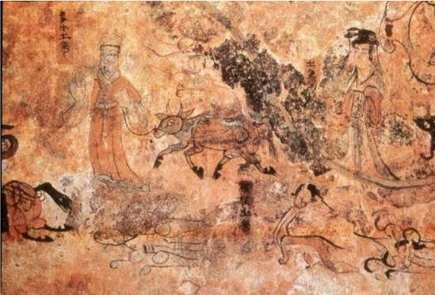

중학교 과학 2 · Ⅷ. 별과 우주 · 교과서 280~283쪽
| 별 | 거리 (pc) | 이동 (칸) | 거리 × 이동 |
|---|
| 연주 시차 | 거리 |
|---|---|
| 1″ | 1 pc |
| 0.5″ | 2 pc |
| 0.25″ | 4 pc |
| 0.1″ | 10 pc |
서로 다른 방향에서 볼 때 시선 방향의 차이 = 시차
관측 지점과 물체까지의 거리와 시차는 반비례
공전 궤도 양 끝에서 측정한 시차의 절반 = 연주 시차
연주 시차가 1″인 별까지의 거리 = 1 pc
별의 연주 시차를 측정 → 별까지의 거리를 구함
교과서 284~287쪽
| 거리 (cm) | 빛의 세기 (lx) | 거리² (m²) | 세기×거리² |
|---|---|---|---|
| 거리 (cm) | 원의 지름 (cm) | 지름 몇 배? | 넓이 몇 배? |
|---|---|---|---|
| 등급 차 | 밝기 비 |
|---|
| 구분 | 겉보기 등급 | 절대 등급 |
|---|---|---|
| 정의 | 눈에 보이는 밝기의 등급 | 10 pc에 있다고 가정한 등급 |
| 특징 | 작을수록 밝게 보임 | 작을수록 실제로 밝음 |
| 태양 | −26.7등급 | 4.8등급 |
| 겉보기 − 절대 | 거리 | 예 |
|---|---|---|
| 0보다 작음 | 10 pc보다 가까움 | 시리우스 (−2.9) |
| 0 | 10 pc | |
| 0보다 큼 | 10 pc보다 멂 | 베텔게우스 (6.5) |
| 별 | 알타이르 | 아르크투루스 | 리겔 |
|---|---|---|---|
| 별자리 · 계절 | 🦅 독수리자리 여름 (견우성) | 🐂 목동자리 봄 | 🏹 오리온자리 겨울 |
| 겉보기 등급 | 0.77 | −0.04 | 0.12 |
| 절대 등급 | 2.2 | −0.3 | −6.8 |
| 겉보기 − 절대 | −1.43 | 0.26 | 6.92 |
빛의 세기는 거리의 제곱에 반비례
1등급 차 = 약 2.5배, 5등급 차 = 100배
밝게 보이는 별 = 겉보기 등급이 작은 별
실제로 밝은 별 = 절대 등급이 작은 별
(겉보기 등급 − 절대 등급) 클수록 먼 별
교과서 288~289쪽
| 별 | 색 👆 | 겉보기 등급 👆 | 절대 등급 👆 |
|---|---|---|---|
| 베텔게우스 | 붉은색 | 약 0.5 | 약 −5.9 |
| 리겔 | 청백색 | 약 0.1 | 약 −7.0 |
| 시리우스 | 백색 | −1.5 | +1.4 |
| 별 | 겉보기 등급 👆 | 절대 등급 👆 |
|---|---|---|
| 알비레오 A | 약 3.1 | 약 −2.4 |
| 알비레오 B | 약 5.1 | 약 −0.3 |
| 구분 | 🔴 베텔게우스 | ⚪ 시리우스 A |
|---|---|---|
| 색과 표면 온도 | 붉은색 (약 3500 K) 상대적으로 차가움 | 청백색 (약 9900 K) 훨씬 뜨거움 |
| 별의 크기 (반지름) | 태양의 약 700~900배 적색 초거성 | 태양의 약 1.7배 주계열성 |
| 절대 등급 (실제 밝기) | 약 −5.85등급 태양의 약 10만 배 | 약 +1.42등급 태양의 약 25배 |
용암: 온도가 낮아질수록 노랑 → 빨강 → 검정
별의 색은 표면 온도에 따라 다양함
온도 높을수록 청색, 낮을수록 적색
태양: 황색, 표면 온도 약 6000 ℃
| 질량 (태양 = 1) | 색 | 표면 온도 |
|---|---|---|
| 0.5 | 적색 | 약 3500 ℃ |
| 1 (태양) | 황색 | 약 6000 ℃ |
| 3 | 백색 | 약 10000 ℃ |
| 15 | 청색 | 약 30000 ℃ |
| 질량 (태양 = 1) | 색 | 수명 (약) |
|---|---|---|
| 0.5 | 적색 | 수백억 년 |
| 1 (태양) | 황색 | 100억 년 (지금 약 46억 살) |
| 3 | 백색 | 수억 년 |
| 15 | 청색 | 약 1000만 년 |
중학교 과학 2 · Ⅷ. 별과 우주 · 2. 우주 · 교과서 294~297쪽

👆 클릭: 밤하늘의 은하수| 천체 | 천체 이름 | 관측된 천체의 공통된 특징 | 천체의 종류 |
|---|---|---|---|
| 성단 | 벌집 성단, 보석 상자 | 주로 파란색 별 · 일정한 모양 없음 | 산개 성단 |
| 큰부리새자리 47, 오메가 성단 | 주로 붉은색 별 · 공 모양 | 구상 성단 | |
| 성운 | 초승달, 달리는 닭 | 붉은색 빛을 냄 | 방출 성운 |
| 아이리스, 런닝맨 | 파란색 빛을 냄 | 반사 성운 | |
| 석탄 포대, 말머리 | 검게 보임 | 암흑 성운 |
| 종류 | 산개 성단 | 구상 성단 |
|---|---|---|
| 모습 | ||
| 별의 수·모양 | 수십~수만 개, 일정한 모양 없이 | 수만~수십만 개, 공 모양으로 빽빽 |
| 별의 색 | 파란색 젊은 별 | 붉은색 늙은 별 |
| 분포 | 대부분 나선팔 | 중심부와 원반을 둘러싼 구형 공간 |
성운은 주로 우리은하의 나선팔에 분포
우리은하: 태양계를 포함하는 은하, 태양계는 나선팔에 위치
은하수: 별들이 원반 면에 모여 있어 띠 모양으로 보임
성단: 일정한 형태가 없는 산개 성단, 공 모양의 구상 성단
성운: 붉은빛 방출 · 파란빛 반사 · 검게 암흑 성운
교과서 298~299쪽
→ 풍선과 우주 모형으로 확인해 보자!
| 구분 | 1~2 거리 (cm) | 1~3 거리 (cm) |
|---|---|---|
| 작게 | ||
| 크게 | ||
| 늘어난 거리 |
과정: ① 풍선을 작게 불어 붙임딱지를 고루 붙이고 3개에 1, 2, 3 쓰기 → ② 1~2, 1~3 거리 재기 → ③ 더 크게 불어 다시 재기
| 은하 | 시간 1 | 지금 | 늘어난 거리 |
|---|
격자(자)는 그대로, 공간만 늘어남 · 은하를 클릭하면 기준이 바뀜
| 풍선 모형 | 풍선 표면 | 붙임딱지 | 풍선 불기 |
|---|---|---|---|
| 실제 우주 | 우주 공간 | 은하 | 우주 팽창 |
풍선 표면은 우주 공간, 붙임딱지는 은하
풍선 표면이 팽창할수록 붙임딱지 사이가 멀어짐
멀리 있는 은하일수록 더 빨리 멀어짐
팽창하는 우주에는 중심이 없다 · 약 138억 년 전 탄생
교과서 300~305쪽
카드를 누르면 우주 탐사와의 관계가 나타나요. 먼저 학생들이 우주 기술이라고 생각하는 것을 손들게 하세요.
인류는 로켓, 우주선, 위성, 탐사 로봇 등의 기술을 발전시키며 활동 영역을 지구 밖으로 넓히고 있음
| 평가 항목 | ☆ ○ △ |
|---|---|
| 우주 탐사 성과를 바탕으로 계획했는가? | |
| 계획을 구체적으로 세웠는가? | |
| 창의성 · 다양성 |
인류는 끊임없이 우주를 탐사하고, 발달한 과학 기술은 삶에 유용하게 쓰임
우주 탐사로 우주에 대한 지식과 이해를 넓히고, 첨단 기술을 일상생활에 활용
인류는 활동 영역을 지구 밖으로 넓히려 노력 중
계획: 탐사 목적과 목표를 명확히, 효율적으로
끈 차시는 학생 메뉴·게시판에서 보이지 않아요. 학생 화면은 새로 고침하거나 2분 안에 반영돼요.